大山三峰山
| 日付 | 2007年3月10日（土） |
|---|---|
| 山域 | 丹沢 |
| メンバー | 単独 |
| 山行形態 | 日帰り |
| アクセス | 電車、バス |
| ルート (Map) | 煤ヶ谷→物見峠→大山三峰山→不動尻→鐘ヶ嶽→広沢寺温泉入口 |
登山道がおもしろそうな大山三峰山へ行く。
丹沢･大山から派生する尾根上にある小ピーク。
7:41 本厚木駅到着。
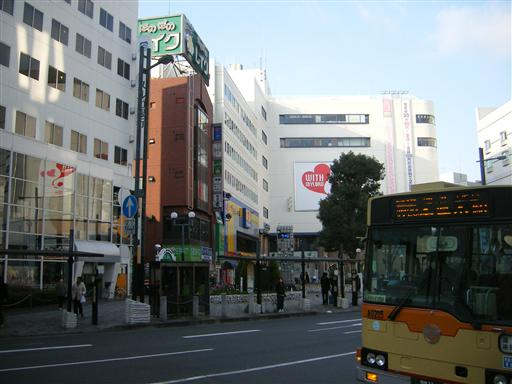
8:26 煤ヶ谷バス停到着。標高140m。
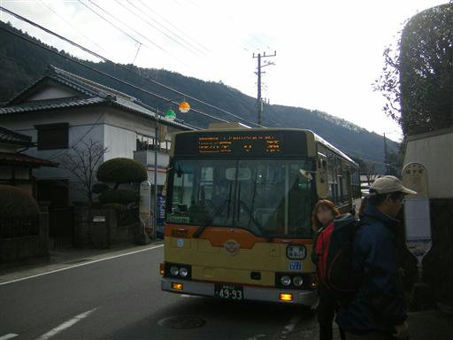
狩猟区域とのこと。何をどう気を付けろと…
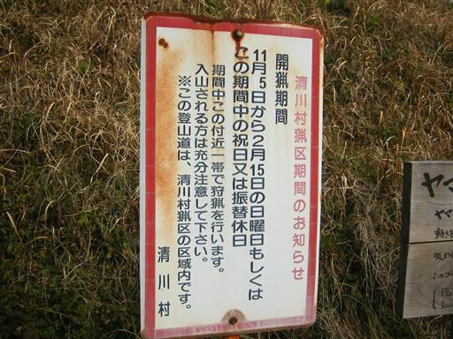
物見峠に到着。登山道の交差点。
木々に覆われ展望はきかない。
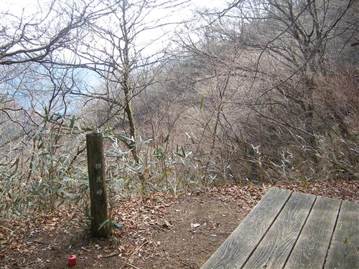
笹道を歩いていく。まだ鎖場は現れない。
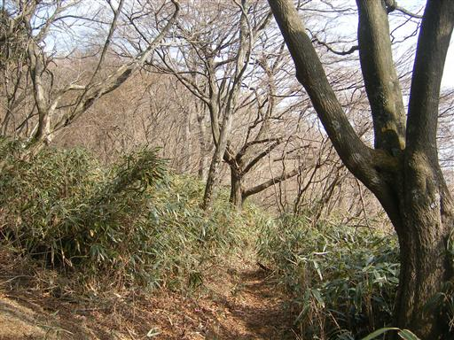
崩落地。この辺りから尾根がだんだん細くなってくる。
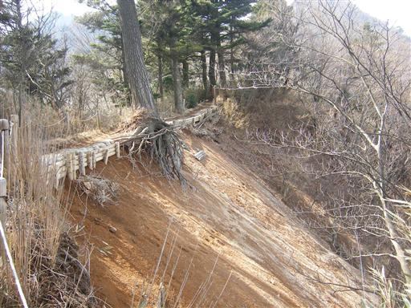
遠くに丹沢の山並が見える。
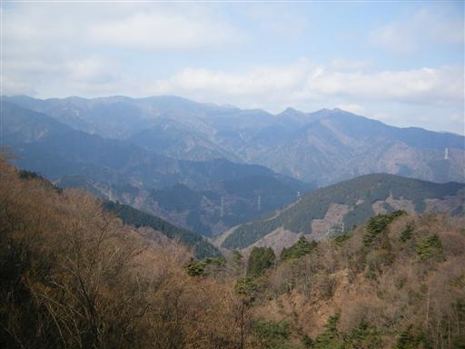
この辺りから鎖場が始まる。登山者が捨てていったと思われる棒がたくさん落ちている。
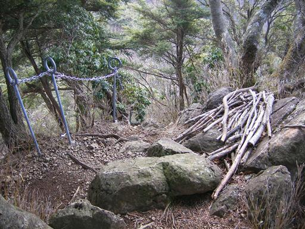
登山道は整備されているので歩きやすい。
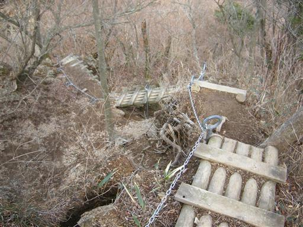
10:51 大山三峰山山頂到着。標高935m。
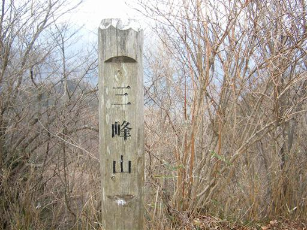
11:12 昼食をとって狭い山頂出発。
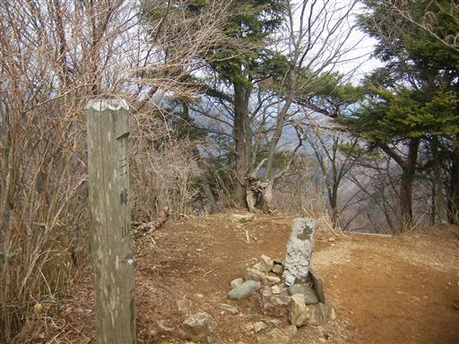
下山道も所々に鎖場がある。
見た目ほど難しくはない。
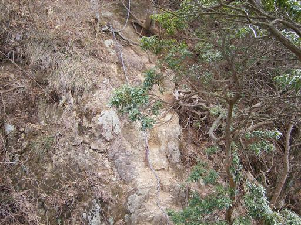
12:26 下山後、トンネルを抜けたところから、鐘ヶ嶽への登山道に入る。
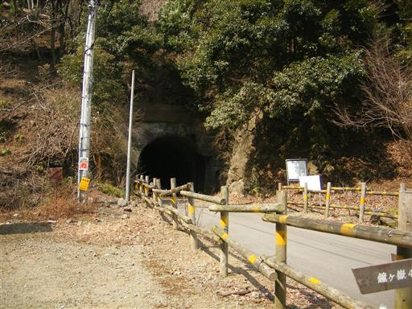
12:51 鐘ヶ嶽山頂到着。標高561m。
不気味な石像が2体並んでいる。
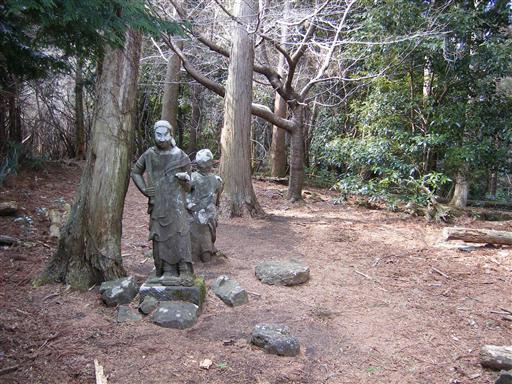
山頂直下にある浅間神社。
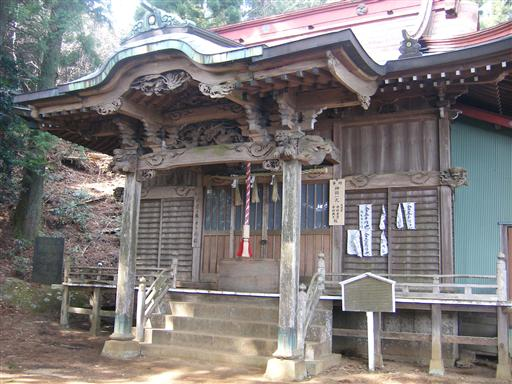
鐘ヶ嶽下山道から関東平野を望む。
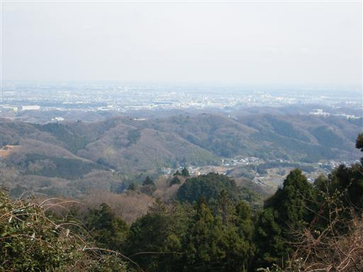
13:52 広沢寺温泉入口バス停到着。標高95m。
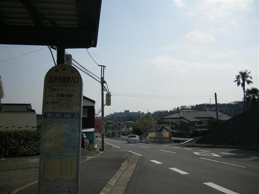
他の山行記録